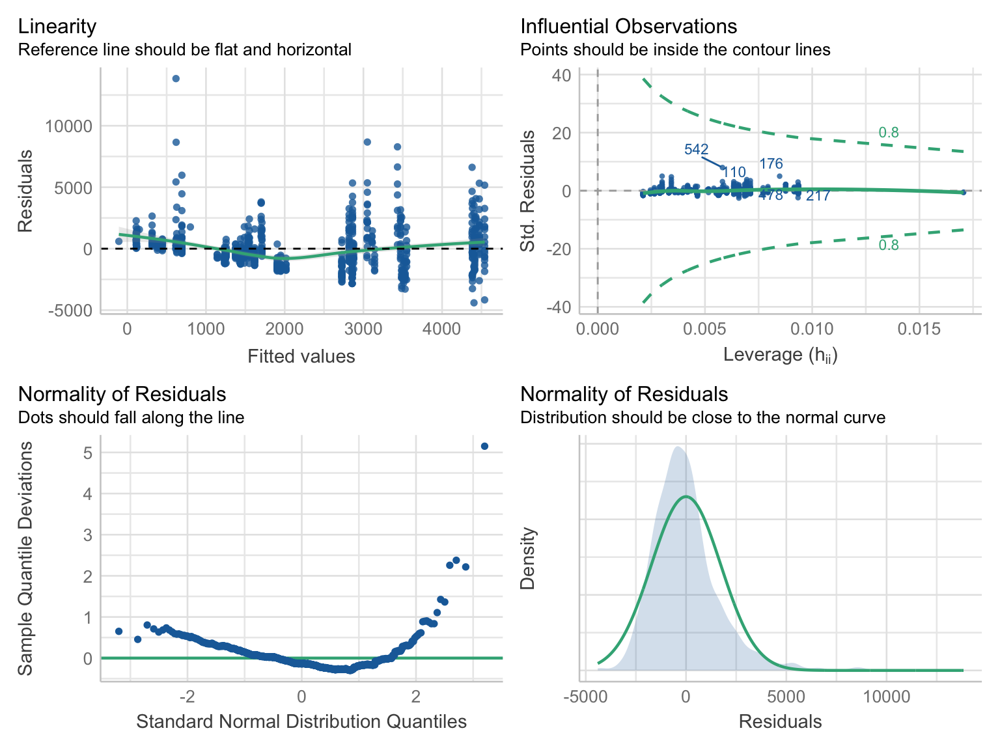
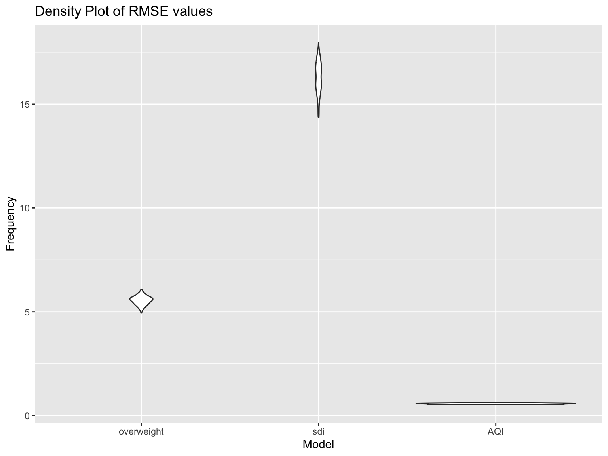

Modeling
Modeling Health Metrics
Before diving into understanding how health metrics play into Citibike usage, we wanted to explore interactions among the health metrics themselves.
- Note: Details on the datasources and how they were impored and cleaned can be found at Data Sources. Here, we’ll just read in CSV’s generated from those tidied dataframes!
Prepare Health Data
citibike_df = read_csv("./citibike_clean/citibike_clean.csv")data = citibike_df %>%
select(start_zipcode, end_zipcode,
start_uhf34_neighborhood, end_uhf34_neighborhood,
start_sdi_score, end_sdi_score,
start_percent_overweight, end_percent_overweight,
start_aq, end_aq) |>
mutate(
zipcode = coalesce(start_zipcode, end_zipcode),
neighborhood = coalesce(end_uhf34_neighborhood, start_uhf34_neighborhood),
sdi = coalesce(start_sdi_score, end_sdi_score),
overweight = coalesce(start_percent_overweight, end_percent_overweight),
aq = coalesce(start_aq, end_aq)) |>
group_by(neighborhood) |>
summarize(sdi = median(sdi),
overweight = mean(overweight),
mean(aq))
data |>
knitr::kable()| neighborhood | sdi | overweight | mean(aq) |
|---|---|---|---|
| Bedford Stuyvesant Crown Heights | 83 | 55.46047 | 7.313404 |
| Bensonhurst Bay Ridge | 74 | 54.25877 | 7.279620 |
| Central Harlem Morningside Heights | 70 | 49.58276 | 8.267167 |
| Chelsea Village | 60 | 40.37892 | 9.236154 |
| Coney Island Sheepshead Bay | 88 | 53.90426 | 7.643318 |
| Downtown Heights Slope | 74 | 52.52867 | 7.488393 |
| East Flatbush Flatbush | 84 | 55.79617 | 7.181058 |
| East Harlem | 74 | 51.13325 | 8.235316 |
| East New York | 84 | 53.02611 | 7.595024 |
| Greenpoint | 88 | 46.85374 | 8.281926 |
| Kingsbridge Riverdale | 63 | 43.43667 | 8.582564 |
| Long Island City Astoria | 76 | 54.11247 | 8.086751 |
| Ridgewood Forest Hills | 88 | 51.80701 | 7.942542 |
| Sunset Park | 74 | 51.38981 | 7.374469 |
| Union Square, Lower Manhattan | 60 | 40.45240 | 9.093228 |
| Upper East Side Gramercy | 51 | 41.70314 | 8.926927 |
| Upper West Side | 63 | 45.20966 | 8.203077 |
| Washington Heights Inwood | 51 | 43.59915 | 8.269662 |
| West Queens | 76 | 55.10576 | 8.053322 |
| Williamsburg Bushwick | 88 | 54.15444 | 7.626626 |
scatter_plot = data |>
ggplot(aes(x = sdi, y = overweight)) + geom_point()Build Health model
fit = lm(overweight ~ sdi, data = data)
fit |>
broom::tidy() |>
select(term, estimate, p.value) |>
knitr::kable(digits = 3)| term | estimate | p.value |
|---|---|---|
| (Intercept) | 23.769 | 0 |
| sdi | 0.353 | 0 |
scatter_plot <- scatter_plot +
geom_smooth(method = "lm", formula = y ~ x, se = FALSE, color = "blue")
ggsave("scatter_plot.png", plot = scatter_plot, width = 6, height = 4)This means that for every one-unit increase in SDI, overweight percentage is estimated to increase by 0.194, assuming all other factors remain constant. They are positively correlated, but not very strongly.
Modeling Citibike with Health Metrics
Our exploratory analyses noted some interesting trends in the Citibike data for NYC by location. This is coupled with interesting trends in health metrics:
For Air Quality index, in terms of fine particles (which we used for modeling) the highest values were in Chelsea Village, and lowest in Rockaways (similar findings for Nitrogen Dioxide). The opposite relationship was true for Ozone levels.
For SDI scores, there was some variability in ranges based on grouping by zip code, uhf34 or uhf43 neighborhood classifications. However, across them all there were large ranges in scores from 10-100. The neighborhood with the highest score was East Harlem, and the lowest was in Upper East Side Gramercy.
Percentage of neighborhood residents who were overweight varied from low 40s in Chelsea Village, up to over 53% in East Flatbush.
As such we elected to model potential interactions between the mean aggregate rides in geographic neighborhoods in NYC and median Air Quality (AQI), median SDI, and percentage overweight to see if they could predict citibike usage in a geographic area.
Prepare Citibike with Health Data
We first summarized the citibike ride data by start station to make a
new variable, n_rides. We then also calculate mean values
of each of the health metrics for the start station location
(AQI, median_sdi, and
overweight).
citibike_group_by_station <- citibike_df %>%
group_by(start_station_name) %>%
summarize(n_rides = n(),
AQI = median(start_aq),
median_sdi = median(start_sdi_score),
overweight = mean(start_percent_overweight),
mean_age = mean(age)
)Our first model:
Outcome: Sum of rides per start station
Predictors: Health metrics for the location the start station is
located in: AQI, Median_SDI,
overweight.
fit_model = lm(n_rides ~ AQI + median_sdi + overweight, data = citibike_group_by_station)
fit_model %>%
broom::tidy() %>%
knitr::kable()| term | estimate | std.error | statistic | p.value |
|---|---|---|---|---|
| (Intercept) | -4958.850602 | 1275.604289 | -3.887452 | 0.0001106 |
| AQI | 1030.484483 | 104.374843 | 9.872920 | 0.0000000 |
| median_sdi | -4.840801 | 3.969773 | -1.219415 | 0.2230815 |
| overweight | -16.978056 | 11.523326 | -1.473364 | 0.1410851 |
citibike_group_by_station %>%
modelr::add_residuals(fit_model) %>%
modelr::add_predictions(fit_model) %>%
ggplot(aes(x = pred, y = resid)) +
geom_point() +
labs(title = "Model of rides per station",
x = "predictor" ,
y = "residual")
- We see that although there is no over linear or higher order relationship between predictor value and residual, there are discrete collections along the x-axis.
We can interpret the Beta coefficients as:
For every increase in AQI (Fine Particles) by 1, there is an increase of sum of rides by 9.87, with all other variables held constant. This is the only value that is significant with p<0.05.
For every increase in median SDI score by one point, there is a decrease of sum of rides by 1.22, with all other variables held constant.
For every increase in percentage of residents that are overweight by 1%, there is a decrease of mean rides by 1.47, with all other variables held constant.
performance::check_model(fit_model, check = c("linearity", "outliers", "qq", "normality"))
- We also plotted the performance of our model looking at linearity, influential observations, and normality of residuals. The normality of the residuals and influental observations are what we would look for, but the lineary and normality of residuals do show some skewness.
Our second model:
Outcome: Number of rides per start station Predictors: * Health
metrics for the location the start station is located in:
AQI, Median_SDI, Overweight.
Interactions including:
Two way interactions: AQI * Median_SDI, AQI * Overweight, Median_SDI * Overweight
Three way interaction: AQI * Median_SDI * Overweight
fit_model_interactions = lm(n_rides ~ AQI + median_sdi + overweight + AQI*median_sdi + AQI*overweight + AQI*median_sdi*overweight, data = citibike_group_by_station)
fit_model_interactions %>%
broom::tidy() %>%
knitr::kable()| term | estimate | std.error | statistic | p.value |
|---|---|---|---|---|
| (Intercept) | 25224.955680 | 1.665574e+04 | 1.514490 | 0.1303380 |
| AQI | -2292.943542 | 2.173513e+03 | -1.054948 | 0.2918009 |
| median_sdi | -687.945354 | 1.996670e+02 | -3.445463 | 0.0006030 |
| overweight | -594.828203 | 4.158046e+02 | -1.430548 | 0.1529914 |
| AQI:median_sdi | 84.347087 | 2.609435e+01 | 3.232389 | 0.0012832 |
| AQI:overweight | 62.616462 | 5.567403e+01 | 1.124698 | 0.2610899 |
| median_sdi:overweight | 14.336004 | 4.848095e+00 | 2.957039 | 0.0032072 |
| AQI:median_sdi:overweight | -1.785503 | 6.544508e-01 | -2.728247 | 0.0065216 |
citibike_group_by_station %>%
modelr::add_residuals(fit_model_interactions) %>%
modelr::add_predictions(fit_model_interactions) %>%
ggplot(aes(x = pred, y = resid)) +
geom_point() +
labs(title = "Model of rides per station - with interaction terms",
x = "predictor" ,
y = "residual")
- Again see that although there is no over linear or higher order relationship between predictor value and residual, there are discrete collections along the x-axis.
We can interpret the Beta coefficients as:
For every increase in air quality (fine particles) by 1, there is a decrease of sum of rides by 1.05, with all other variables held constant.
For every increase in median SDI score by one point, there is a decrease of sum of rides by 3.45, with all other variables held constant.
For every increase in percentage of residents that are overweight by 1%, there is a decrease of sum of rides by 1.43, with all other variables held constant.
However, with interaction terms, this does vary slightly.
For interaction term AQI*median_SDI, this means that if both AQI and median_SDI increase by 1, the net change to sum of rides is decrease of 1.27, if overweight percentage is constant.
For interaction AQI*overweight, if both of them increase by 1, the net change to sum of rides is a decrease of 1.36, if median SDI remains constant.
For interaction median_SDI*overweight, if both increase by 1, the net change to sum of rides is a decrease of 1.92, if AQI (Fine Particles) remains constant.
And for the three way interacton term, if all three increase by 1, the net change to sum of rides is decrease of 1.35.
performance::check_model(fit_model_interactions, check = c("linearity", "outliers", "qq", "normality"))
- Similiar to our model without interaction terms, we see that the linearity and normality of residuals show some skewness, and now even a bit of the normality of residuals. However, it still does not have any overtly influential observations with high leverage score.
Cross-Validation of our Regression Models
We next built a cross-validation by 100 splits (where there are no missing values). We will utilize this to evaluate the models by calculating their RMSE.
cv_df = citibike_group_by_station[complete.cases(citibike_group_by_station$AQI), ] %>%
crossv_mc(100)
#cv_df = crossv_mc(citibike_group_by_station, 100)
cv_df =
cv_df |>
mutate(
fit_model = map(train, \(df) lm(n_rides ~ AQI + median_sdi + overweight, data = df)),
fit_model_interactions = map(train, \(df) lm(n_rides ~ AQI + median_sdi + overweight + AQI*median_sdi + AQI*overweight + AQI*median_sdi*overweight, data = df))) |>
mutate(
rmse_model = map2_dbl(fit_model, test, \(mod, df) rmse(model = mod, data = df)),
rmse_model_interactions = map2_dbl(fit_model_interactions, test, \(mod, df) rmse(model = mod, data = df)))Density plot:
cv_df |>
select(starts_with("rmse")) |>
pivot_longer(
everything(),
names_to = "model",
values_to = "rmse",
names_prefix = "rmse_") |>
mutate(model = fct_inorder(model)) |>
ggplot(aes(x = model, y = rmse)) + geom_violin() +
labs(title = "Density Plot of RMSE values",
x = "Model",
y = "Frequency")
- Our density plot does show that there is a wide range of values for our models, suggesting there may be difficulty in accurately predicting our outcome of mean rides with our input variables.
performance::compare_performance(fit_model, fit_model_interactions) %>%
knitr::kable()| Name | Model | AIC | AIC_wt | AICc | AICc_wt | BIC | BIC_wt | R2 | R2_adjusted | RMSE | Sigma |
|---|---|---|---|---|---|---|---|---|---|---|---|
| fit_model | lm | 13005.58 | 0 | 13005.66 | 0 | 13028.56 | 0 | 0.3627544 | 0.3601284 | 1733.369 | 1738.124 |
| fit_model_interactions | lm | 12916.40 | 1 | 12916.65 | 1 | 12957.76 | 1 | 0.4419803 | 0.4365851 | 1622.043 | 1630.980 |
#performance::compare_performance(fit_model, fit_model_interactions) %>%
# knitr::kable() %>%
#kable_styling() %>%
#save_kable(file = "compare_rides_glm.png")Our model without interaction terms had an R2 of 0.360.
Our model with interaction terms had an R2 of 0.442, suggesting that there are interactions amongst these health metrics that when taken into consideration improve the predictive ability of our model for sum of rides per station.
Reverse regression models:
Next we sought to see if there were any reverse predictive relationships. Such that with a combination of mean number of rides and the other health metrics, we could predict the outcome of mean AQI, SDI, or percentage overweight for a location.
fit_overweight = lm(overweight ~ AQI + median_sdi + n_rides, data = citibike_group_by_station)
fit_overweight %>%
broom::tidy() %>%
knitr::kable()| term | estimate | std.error | statistic | p.value |
|---|---|---|---|---|
| (Intercept) | 89.9889039 | 2.4509306 | 36.716219 | 0.0000000 |
| AQI | -6.5271919 | 0.2624537 | -24.869882 | 0.0000000 |
| median_sdi | 0.1790606 | 0.0109008 | 16.426439 | 0.0000000 |
| n_rides | -0.0001751 | 0.0001188 | -1.473364 | 0.1410851 |
citibike_group_by_station %>%
modelr::add_residuals(fit_overweight) %>%
modelr::add_predictions(fit_overweight) %>%
ggplot(aes(x = pred, y = resid)) +
geom_point() +
labs(title = "Model of mean percentage overweight",
x = "predictor" ,
y = "residual")
- There are some inverse linear relationships seen in our plotting residuals to predictor values, suggesting a possible underlying relationship.
When interpreting the Beta coefficients for predicting percentage overweight:
For every increase in Air quality (fine particles) by one point, there is a decrease of percentage overweight by 24.87
For every increase in median SDI by one point, there is an increase in percentage overweight by 16.43
For every increase in sum of number of rides by one, there is a decrease in percentage overweight by 1.47, although this value was not significant.
fit_AQI = lm(AQI ~ overweight + median_sdi + n_rides, data = citibike_group_by_station)
fit_AQI %>%
broom::tidy() %>%
knitr::kable()| term | estimate | std.error | statistic | p.value |
|---|---|---|---|---|
| (Intercept) | 11.0574109 | 0.1294166 | 85.44045 | 0.0000000 |
| overweight | -0.0703738 | 0.0028297 | -24.86988 | 0.0000000 |
| median_sdi | 0.0041510 | 0.0013162 | 3.15385 | 0.0016775 |
| n_rides | 0.0001146 | 0.0000116 | 9.87292 | 0.0000000 |
citibike_group_by_station %>%
modelr::add_residuals(fit_AQI) %>%
modelr::add_predictions(fit_AQI) %>%
ggplot(aes(x = pred, y = resid)) +
geom_point() +
labs(title = "Model of mean AQI",
x = "predictor" ,
y = "residual")
- Again, there are some inverse linear relationships seen in our plotting residuals to predictor values.
When interpreting the Beta coefficients for predicting Air quality: (all were significant).
For every increase in percentage overweight by one point, there is a decrease of AQI by 24.87
For every increase in median SDI by one point, there is an increase in AQI by 3.15
For every increase in sum of number of rides by one, there is a increase in AQI by 9.87
fit_sdi = lm(median_sdi ~ AQI + overweight + n_rides, data = citibike_group_by_station)
fit_sdi %>%
broom::tidy() %>%
knitr::kable()| term | estimate | std.error | statistic | p.value |
|---|---|---|---|---|
| (Intercept) | -27.7668064 | 11.9758270 | -2.318571 | 0.0206944 |
| AQI | 3.2471457 | 1.0295816 | 3.153850 | 0.0016775 |
| overweight | 1.5101889 | 0.0919365 | 16.426439 | 0.0000000 |
| n_rides | -0.0004211 | 0.0003453 | -1.219415 | 0.2230815 |
citibike_group_by_station %>%
modelr::add_residuals(fit_sdi) %>%
modelr::add_predictions(fit_sdi) %>%
ggplot(aes(x = pred, y = resid)) +
geom_point() +
labs(title = "Model of mean SDI",
x = "predictor" ,
y = "residual")
- Here the inverse linear relationships seen in our plotting residuals to predictor values are less overt than the prior two.
When interpreting the beta statistics for predicting SDI score:
For every increase in AQI by one point, there is a increase of median SDI by 3.15
For every increase in percentage overweight by one point, there is an increase in median SDI by 16.43
For every increase in sum of number of rides by one, there is a decrease in median SDI by 1.22, but this value was not significant (p<0.05)
cv_df = citibike_group_by_station[complete.cases(citibike_group_by_station$AQI), ] %>%
crossv_mc(100)
#cv_df = crossv_mc(citibike_group_by_station, 100)
cv_df =
cv_df |>
mutate(
fit_overweight = map(train, \(df) lm(overweight ~ AQI + median_sdi + n_rides, data = df)),
fit_sdi = map(train, \(df) lm(median_sdi ~ AQI + overweight + n_rides, data = df)),
fit_AQI = map(train, \(df) lm(AQI ~ overweight + median_sdi + n_rides, data = df))) |>
mutate(
rmse_overweight = map2_dbl(fit_overweight, test, \(mod, df) rmse(model = mod, data = df)),
rmse_sdi = map2_dbl(fit_sdi, test, \(mod, df) rmse(model = mod, data = df)),
rmse_AQI = map2_dbl(fit_AQI, test, \(mod, df) rmse(model = mod, data = df)))
cv_df |>
select(starts_with("rmse")) |>
pivot_longer(
everything(),
names_to = "model",
values_to = "rmse",
names_prefix = "rmse_") |>
mutate(model = fct_inorder(model)) |>
ggplot(aes(x = model, y = rmse)) + geom_violin() +
labs(title = "Density Plot of RMSE values",
x = "Model",
y = "Frequency")
- Here we can see that there is a much large spread compared to our RMSE density plots when predicting for mean number of rides. However, the least spread of RMSE values are for AQI, and largest are for median SDI as outcomes.
performance::compare_performance(fit_overweight, fit_sdi, fit_AQI) %>%
knitr::kable()| Name | Model | AIC | AIC_wt | AICc | AICc_wt | BIC | BIC_wt | R2 | R2_adjusted | RMSE | Sigma |
|---|---|---|---|---|---|---|---|---|---|---|---|
| fit_overweight | lm | 4600.735 | 0 | 4600.818 | 0 | 4623.714 | 0 | 0.7519890 | 0.7509669 | 5.5667394 | 5.5820117 |
| fit_sdi | lm | 6161.554 | 0 | 6161.636 | 0 | 6184.533 | 0 | 0.4526422 | 0.4503866 | 16.1665203 | 16.2108730 |
| fit_AQI | lm | 1284.840 | 1 | 1284.923 | 1 | 1307.819 | 1 | 0.7011549 | 0.6999234 | 0.5780205 | 0.5796063 |
#performance::compare_performance(fit_overweight, fit_sdi, fit_AQI) %>%
# knitr::kable() %>%
#kable_styling() %>%
#save_kable(file = "compare_healthoutcomes_glm.png")- We can see that the model with the highest R2 was when the outcome was overweight values, with R2 = 0.752, with AQI next and SDI the lowest.